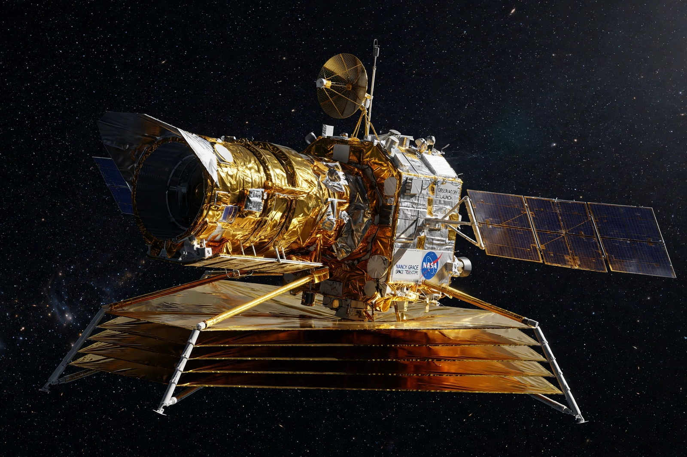

From Wikipedia, the free encyclopedia
| Nancy Grace Roman Space Telescope | |
|---|---|
| Agency | NASA |
| Launch | Planned 2026–2027 |
| Mirror | 2.4 m (Hubble-class) |
| Field | Wide Field Instrument ~100× Hubble's infrared view |

The Nancy Grace Roman Space Telescope is a NASA infrared observatory under construction for launch in the mid-2020s (targeted 2027), built around a 2.4-metre mirror donated from a reconnaissance satellite — Hubble's twin in size, but with a panoramic Wide Field Instrument imaging areas 100 times larger per shot.
Roman will survey billions of galaxies to probe dark energy and dark matter, complete a census of exoplanets by microlensing (kin to the Planet page), and demonstrate a coronagraph for directly imaging exoplanets. It is NASA's flagship complement to Webb and Hubble (the science.nasa.gov version of this mission lives in this crawl's NASA branch).
Dark energy · Dark matter · James Webb Space Telescope · Hubble Space Telescope